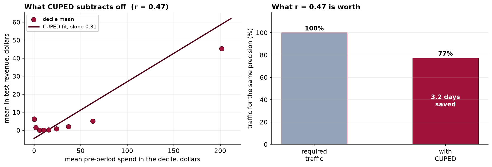

A Pre-Registered Two-Arm Online Experiment: Power, Sequential Monitoring and Variance Reduction
Design, execution and analysis of a 14-day conversion experiment with a null true effect, including a simulation study of the inflation caused by repeated interim analysis.
Objective. To estimate the effect of a redesigned checkout on visitor-to-order conversion, and to quantify the inferential cost of interim analysis in a design where the true effect is known to be null. Methods. A two-arm parallel experiment randomized 79,704 visitors 1:1 over 14 days. Sample size was fixed in advance at 39,472 per arm for 80% power to detect a 10% relative lift from a 4.0% baseline at α = 0.05 two-sided. The analysis plan, including a single terminal analysis, a calibrated sequential alternative, exclusion criteria and secondary-metric handling, was registered before collection. Sample ratio mismatch was tested prior to outcome inspection. A Monte Carlo study of 5,000 null experiments quantified type I error inflation under daily interim analysis and calibrated a constant stopping boundary. CUPED was applied to revenue per visitor using pre-assignment 30-day spend. Results. The SRM check passed (χ² = 0.472, p = 0.492). At the planned terminus, conversion was 4.0652% (treatment) against 4.1102% (control), a difference of −0.045 percentage points (z = −0.321, p = 0.748), 95% CI on the relative effect [−7.78%, +5.59%]. An interim analysis on day 4 would have yielded +15.30% (p = 0.023). Daily monitoring against a fixed 1.96 boundary produced a false-positive rate of 18.7%; a simulation-calibrated boundary of 2.552 restored 5.0%. CUPED reduced outcome variance by 22.5% (r = 0.475), lowering the standard error of the mean difference by 12.0%. Conclusion. The interval excludes the pre-specified minimum detectable effect, supporting a decision not to deploy. The day-4 result illustrates that unplanned interim analysis, absent any analytic misconduct, is sufficient to generate a confident and reversed conclusion.
1. Design
The experiment is a two-arm parallel-group design with allocation at the visitor level. The randomization unit, the analysis unit and the unit of inference coincide, which is a precondition for the standard two-proportion estimator to have its nominal properties. Where a design randomizes visitors but analyzes sessions, the resulting correlation within visitor produces the design-effect inflation treated in Capstone 18.
| Element | Specification |
|---|---|
| Population | Visitors reaching the checkout during the test window |
| Allocation | 1:1, visitor level, persistent across sessions |
| Primary endpoint | Binary: order placed during the test window |
| Baseline | 4.0% (historical) |
| MDE | 10% relative, 4.00% to 4.40%, a 0.40 point absolute difference |
| Power / α | 80% / 0.05, two-sided |
| Planned n | 39,472 per arm; 78,944 total; 14 days at ~5,700/day |
| Interim analyses | None planned. A calibrated boundary specified as an alternative |
| Secondary endpoints | Revenue per visitor, average order value; estimation only |
The sample size follows the standard normal-approximation formula for the difference of two independent proportions. The arcsine-transformed calculation implemented in statsmodels returns 39,454 for the same inputs, a difference of 0.05% and of no practical consequence at this scale.
The relationship between the MDE and the required sample size is quadratic in the reciprocal, so the elasticity of duration to the detectable effect is severe: 20% relative requires 4 days, 10% requires 14, and 3% requires 149. Specifying the MDE is therefore the binding design decision, and it is not a statistical one. It is a statement about the smallest effect that would change the deployment decision, and it should be elicited from the decision maker and recorded.
2. Data preparation
Four data-quality faults were present in the assignment log, all of them anticipated in the registered plan. Specifying exclusions in advance is material here: each of the four could plausibly be handled in more than one way, and the choice among them is not neutral with respect to the estimate.
| Stage | Rows | Removed | Rationale |
|---|---|---|---|
| Raw log | 80,236 | One record per assignment event | |
| Exact duplicate removal | 79,896 | 340 | Logger retry on timeout |
| Cross-arm exclusion | 79,704 | 192 (96 visitors) | Visitors with records in both arms |
| One record per visitor | 79,704 | 0 | Analysis file |
| Refund sentinel voiding | — | 120 values | Revenue of −1 denotes a refunded order |
The cross-arm exclusion warrants comment. Retaining the earlier of two conflicting assignments is a common convention and is not defensible here: the subset of visitors affected by a bucketing fault is not exchangeable with the remainder, and conditioning on the order in which their records were written reintroduces selection into an otherwise randomized comparison. Visitors without a unique valid assignment are excluded from both arms.
3. Randomization check
Sample ratio mismatch was assessed before any outcome was examined. The ordering is a procedural safeguard: a diagnostic evaluated after the primary result is known is subject to the analyst's disposition toward that result.
| Arm | n | Share | Test |
|---|---|---|---|
| Control | 39,755 | 49.88% | χ² = 0.472 |
| Treatment | 39,949 | 50.12% | p = 0.492 |
The check passes. Practice in large-scale experimentation is to set the action threshold considerably stricter than the conventional 0.05, commonly in the range 0.0001 to 0.001, because at these sample sizes the test is sensitive to trivial imbalances and the diagnostic is intended to detect pipeline defects rather than sampling variation. Both arms exceed the registered per-arm requirement, so the realized power matches the design.
4. Primary result
| Analysis point | n | Control | Treatment | Relative effect | 95% CI | z | p |
|---|---|---|---|---|---|---|---|
| Day 4 (unplanned) | 22,773 | 4.0056% | 4.6185% | +15.30% | [+2.13%, +28.47%] | 2.277 | 0.0228 |
| Day 14 (planned) | 79,704 | 4.1102% | 4.0652% | −1.09% | [−7.78%, +5.59%] | −0.321 | 0.7484 |
The absolute difference at the planned terminus is −0.045 percentage points with a 95% interval of [−0.320, +0.230] points. The registered MDE corresponds to an absolute difference of +0.411 points, which lies above the upper limit of the interval.
A non-significant result is uninformative unless the design's resolving power is known. Here it is known, because n was fixed against a stated MDE, and the interval excludes that MDE. The conclusion is therefore not a failure to detect an effect but a positive finding that any effect present is smaller than the threshold at which deployment was to be justified.
5. Type I error under interim analysis
A Monte Carlo study quantified the inflation. Five thousand experiments were generated under an exact null with 2,850 visitors per arm per day for 14 days, and a two-proportion z-test was computed on the cumulative data at the end of each day from day 2, giving 13 interim analyses.
| Monitoring regime | Interim analyses | Rejection rate under H₀ |
|---|---|---|
| Terminal analysis only | 0 | 4.7% |
| Daily to day 3 | 3 | 9.6% |
| Daily to day 6 | 6 | 13.8% |
| Daily to day 9 | 9 | 16.3% |
| Daily to day 14 | 13 | 18.7% |
The rate rises to 18.7%, well below the 1 − 0.95ⁿ ≈ 48.7% that would obtain for 13 independent tests. The discrepancy is attributable to the strong positive dependence among successive test statistics: each interim analysis is computed on data containing all observations available at the previous one, so the sequence of z-statistics behaves approximately as a Brownian motion on the information scale rather than as independent draws.
6. A calibrated stopping boundary
Prohibiting interim analysis is neither realistic nor desirable, since monitoring serves purposes other than inference, notably the early detection of harm. The alternative is a boundary that controls the family-wise error rate across the monitoring schedule. Exploiting the same simulation, the boundary is the 95th percentile of the distribution of the maximum absolute z-statistic over the 13 analyses.
| Rule | Boundary | Equivalent single-look p | Type I error over 13 looks |
|---|---|---|---|
| Fixed-sample | 1.960 | 0.0500 | 18.7% |
| Simulation-calibrated | 2.552 | 0.0107 | 5.0% |
| Šidák, treating looks as independent | 2.884 | 0.0039 | conservative |
The calibrated boundary is materially less severe than the independence-based correction, which is the practical return on modeling the dependence rather than bounding it. The day-4 statistic of 2.277 does not cross 2.552, so a design incorporating this rule would have continued to the planned terminus.
This is a Pocock-type constant boundary, chosen for expositional transparency. Alpha-spending formulations, particularly the O'Brien-Fleming boundary, allocate error unevenly across the schedule, remaining highly conservative at early analyses and approaching the fixed-sample critical value at the terminus. That profile is generally preferable where the planned terminal analysis is the primary one, since it preserves nearly all of the terminal power. Confidence-sequence methods provide an anytime-valid alternative requiring no pre-specified schedule, at the cost of wider intervals throughout.
7. Variance reduction
CUPED forms the adjusted outcome Y₀ = Y − θ(X − X̄), where X is a pre-assignment covariate and θ = Cov(Y, X) / Var(X). Because X is realized before randomization, it is independent of assignment in expectation, and the adjustment is unbiased for the treatment effect while reducing variance by a factor of exactly 1 − ρ².
| Quantity | Unadjusted | CUPED-adjusted |
|---|---|---|
| Correlation with covariate | r = 0.475 | — |
| Outcome variance | 3,118.6 | 2,415.5 |
| Variance reduction | — | 22.5% |
| SE of the mean difference | $0.3958 | $0.3483 |
| Reduction in SE | — | 12.0% |
| Traffic for equal precision | 100% | 77.5% |
The realized reduction of 22.5% matches r² to three decimal places, as it must. This identity is the practical value of the method: its benefit can be evaluated on historical data before any implementation work is undertaken. Applied instead to the binary primary endpoint, the same covariate would yield a reduction of approximately 2%, since a rare binary outcome admits little linear prediction from any covariate.

The highest decile falls below the fitted line, indicating mild non-linearity at the extreme of the covariate distribution. This does not bias the adjusted estimator, since unbiasedness depends only on X being pre-assignment, but it does mean the variance reduction achieved is slightly below what a linear model would predict from the correlation alone.
8. Discussion
Three points bear emphasis. First, the day-4 result was not produced by any analytic impropriety. No metric was selected post hoc, no subgroup was excluded, no filter was varied. The inflation arises entirely from the multiplicity implicit in repeated inspection, which means procedural remedies rather than exhortations to analytical integrity are what is required.
Second, the sign reversal between the interim and terminal analyses is not anomalous. Under an exact null the cumulative test statistic is a random walk on the information scale, and conditional on having crossed a boundary early, the expected subsequent path returns toward zero. The magnitude of an effect estimated at the moment of crossing is therefore systematically exaggerated, a phenomenon common to all optional-stopping regimes and closely related to the winner's curse in underpowered testing.
Third, the value of pre-registration in this case is not that it prevented a false positive, which a fixed-duration test would also have done by accident. It is that it makes the null result interpretable. An experiment run for an arbitrary period yields an interval whose width is arbitrary, and the analyst cannot then say whether a non-significant result excludes a consequential effect. Fixing n against a stated MDE converts the absence of a finding into a bounded statement about effect magnitude.
A limitation is that the analysis addresses a single endpoint over a fixed window. Effects that emerge beyond 14 days, novelty and primacy effects within it, and heterogeneity across device or acquisition channel are all outside what this design can resolve. Subgroup analyses were not pre-specified and are not reported, since a design powered for an overall 10% relative effect has materially lower power within any subgroup and the multiplicity is unaddressed.
9. Conclusion
A pre-registered two-arm experiment on 79,704 visitors estimated the effect of a checkout redesign on conversion at −1.09% relative, 95% CI [−7.78%, +5.59%]. The interval excludes the pre-specified 10% minimum detectable effect, supporting a decision not to deploy. An unplanned interim analysis on day 4 would have reported +15.30% (p = 0.023); simulation places the probability of at least one such result, under an exact null and daily monitoring, at 18.7%. A calibrated constant boundary of 2.552 restores nominal error control and would not have stopped this test. CUPED on pre-assignment spend reduced the standard error of the secondary endpoint by 12.0%.
References
- Deng, A., Xu, Y., Kohavi, R., & Walker, T. (2013). Improving the sensitivity of online controlled experiments by utilizing pre-experiment data. Proceedings of WSDM 2013, 123–132.
- Kohavi, R., Tang, D., & Xu, Y. (2020). Trustworthy Online Controlled Experiments. Cambridge University Press.
- Johari, R., Koomen, P., Pekelis, L., & Walsh, D. (2017). Peeking at A/B tests: why it matters, and what to do about it. Proceedings of KDD 2017, 1517–1525.
- Pocock, S. J. (1977). Group sequential methods in the design and analysis of clinical trials. Biometrika, 64(2), 191–199.
- O'Brien, P. C., & Fleming, T. R. (1979). A multiple testing procedure for clinical trials. Biometrics, 35(3), 549–556.
- Lan, K. K. G., & DeMets, D. L. (1983). Discrete sequential boundaries for clinical trials. Biometrika, 70(3), 659–663.
- Fabijan, A., Gupchup, J., Gupta, S., et al. (2019). Diagnosing sample ratio mismatch in online controlled experiments. Proceedings of KDD 2019, 2156–2164.
- Gelman, A., & Carlin, J. (2014). Beyond power calculations: assessing type S and type M errors. Perspectives on Psychological Science, 9(6), 641–651.
Reproducibility
The dataset (capstone-designing-an-ab-test.xlsx), containing the assignment log with its data-quality faults intact, the pre-registered analysis plan and the simulated true effect, accompanies the chapter together with an executable notebook reproducing every statistic, table and figure, including the 5,000-replicate simulation and the boundary calibration. Analyses use NumPy, pandas, SciPy, statsmodels and Matplotlib.